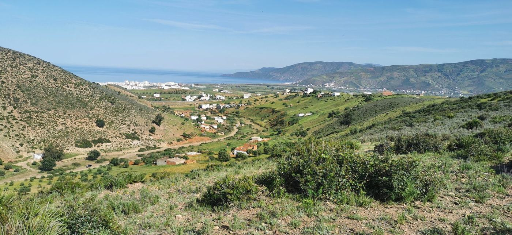
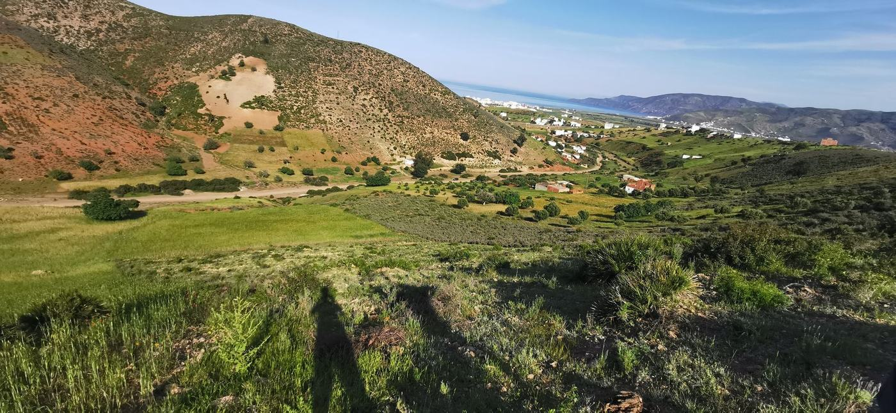
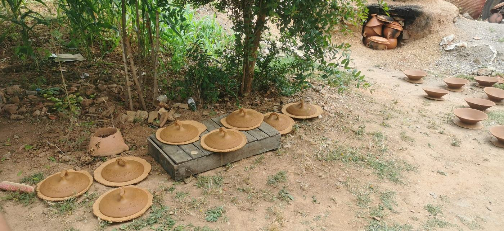
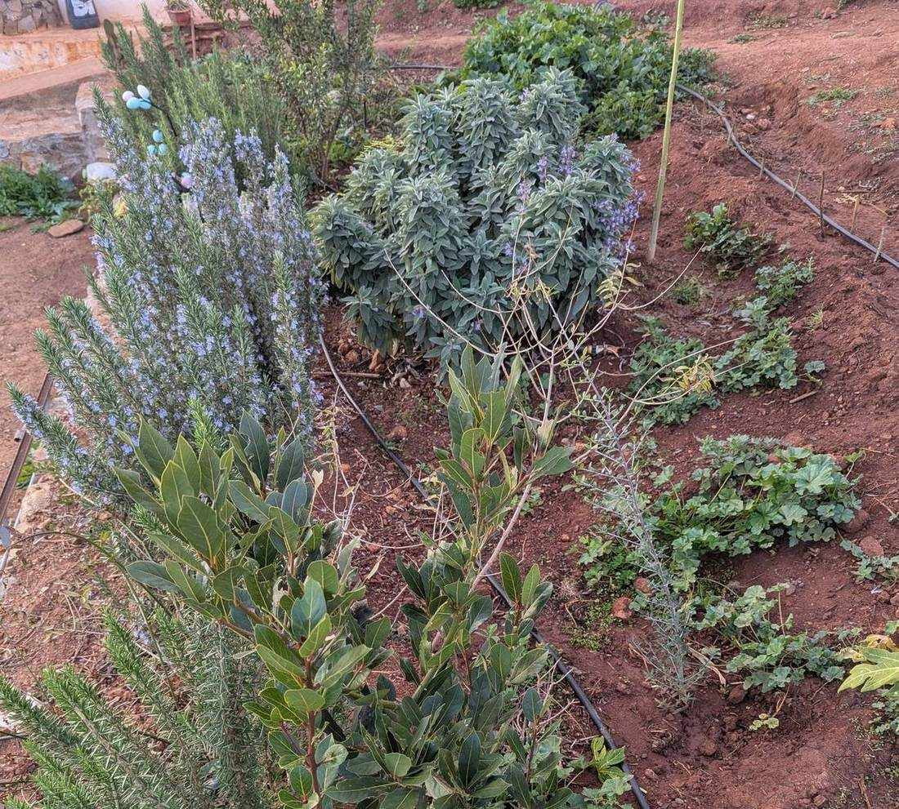
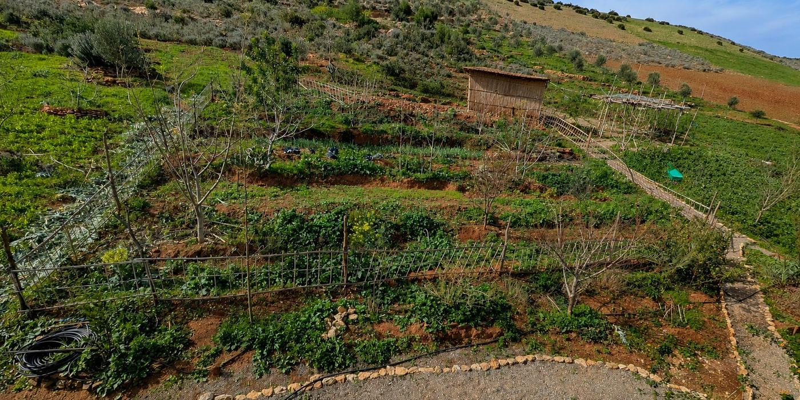
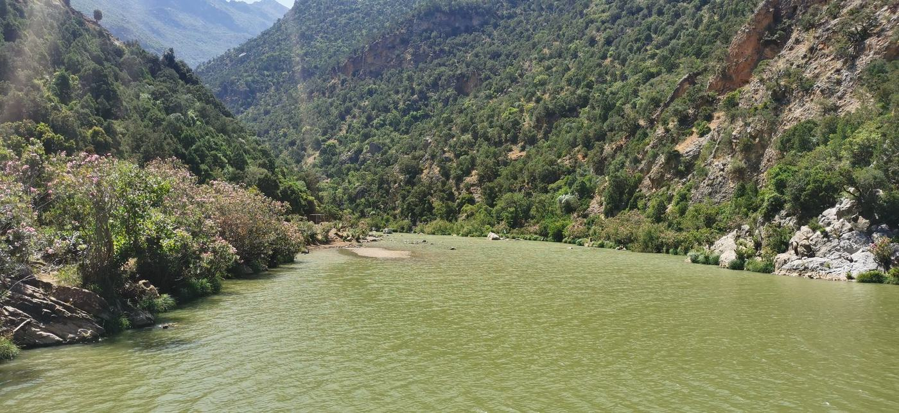

The Noualla Living Landscape is a public prototype designed to help guests explore the land, discover community-led experiences and follow verified environmental and local impact.
The clickable digital trail and baseline impact record are available now. QR markers, multilingual content, experience requests and quarterly updates form the next development phase.
Clickable locations introduce the landscape, restoration systems, gardens and stories connected to specific places at Noualla.
Guests will be able to discover pottery, cooking, herbal, farming and guided experiences led by identified local providers.
Current achievements are presented separately from future targets. The record will be updated quarterly as the project develops.
The prototype communicates what exists, what is planned and what still requires validation.
The clickable prototype introduces selected parts of Noualla's landscape. Physical trail markers and QR codes will be installed during the next development phase.


Two nearby pottery families have verbally agreed to help develop future guest workshops. The craft is practiced by women and has been passed through mothers and grandmothers to their daughters. Providers will control availability, visitor numbers, pricing and what they choose to share.

Led by Hanane Rahmoune, Noualla's herb garden supports herbal teas, dried plants and essential-oil experimentation. Future experiences will connect the garden with local women and seasonal knowledge.

A guided introduction to trees, terraces, swales, food gardens, greywater reuse, beehives and the process of restoring a dry hillside before expanding hospitality.
Current indicators are maintained by the founder and supported where available by land documents, field records, photographs and videos.
The digital layer supports human connection. It does not replace guides, artisans, hosts or direct community relationships.
After it has been tested with guests and community providers, its structure can be documented for other small rural accommodations, farms and community-tourism projects. Other destinations would not copy Noualla's culture or experiences. They would adapt the underlying principles to their own place: restoration before expansion, fair local benefit-sharing, transparent impact indicators and simple digital storytelling.
Baseline assessment, land practices and practical impact indicators.
Provider-led pricing, scheduling, visitor limits and benefit-sharing.
Adaptable locations, stories, status labels and impact records.
Future support for rural operators adapting the framework to their own destination.
No external operator is currently using the framework. Testing beyond Noualla is a three-year target.

The land is already regenerating. The guest pilot is already validated. The Living Landscape now documents what exists and what comes next.